Candidate List 20260607 Previous Day Next Day Section 1: New Sources (age<1d) Cosmological Afterglow
Section 2: Old (1-5d) sources observed last night placeholder
Section 1: New Afterglow/FBOT Cands Last Night (7)
1. ZTF26abaefti (Afterglow?) [Back to Top] [Share] [Trigger Swift] [Fritz ] [Lasair ]RA, Dec: 202.36071, -21.71444 13h29m26.57s, -21d-42m-51.99sGalactic (l, b): 314.53185, 40.29973 ext(g-r) = 0.104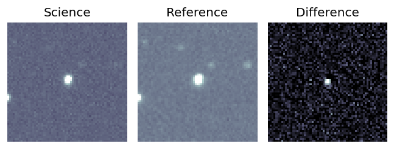
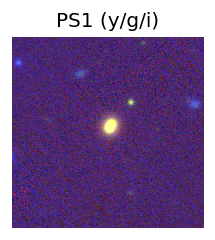
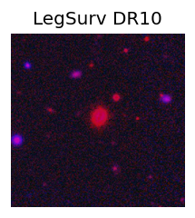
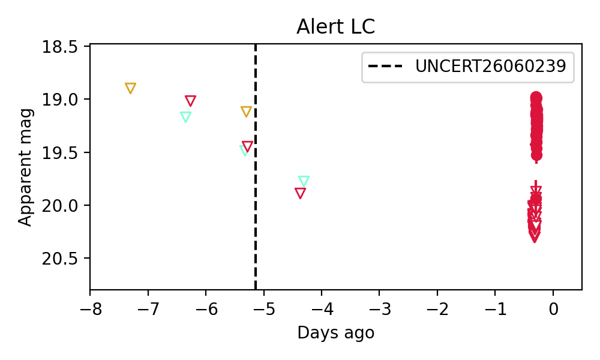
2. ZTF26abafmgj (Afterglow?) [Back to Top] [Share] [Trigger Swift] [Fritz ] [Lasair ]RA, Dec: 227.67242, -27.74897 15h10m41.38s, -27d-44m-56.31sGalactic (l, b): 337.05141, 25.74455 ext(g-r) = 0.228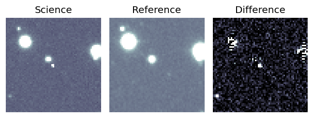
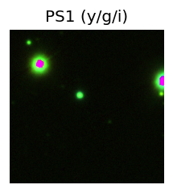
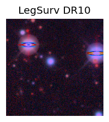
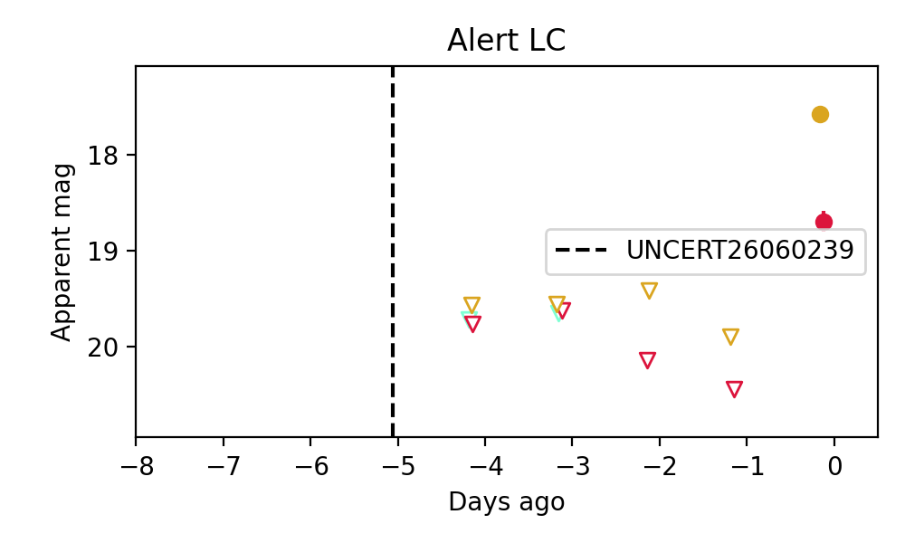
Consistent with synchrotron, g-r>0!
3. ZTF26abagdiz (Afterglow?) [Back to Top] [Share] [Trigger Swift] [Fritz ] [Lasair ]RA, Dec: 214.59457, -10.90932 14h18m22.70s, -10d-54m-33.57sGalactic (l, b): 334.82485, 46.50858 WARNING: 2.76 deg from ecliptic plane ext(g-r) = 0.067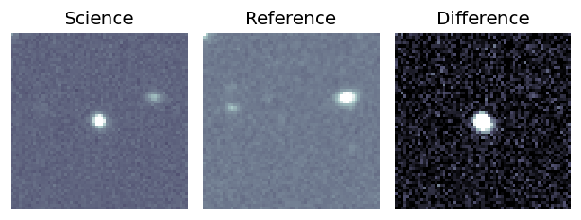
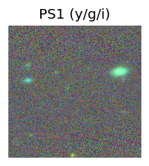
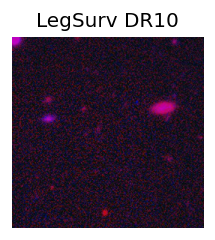
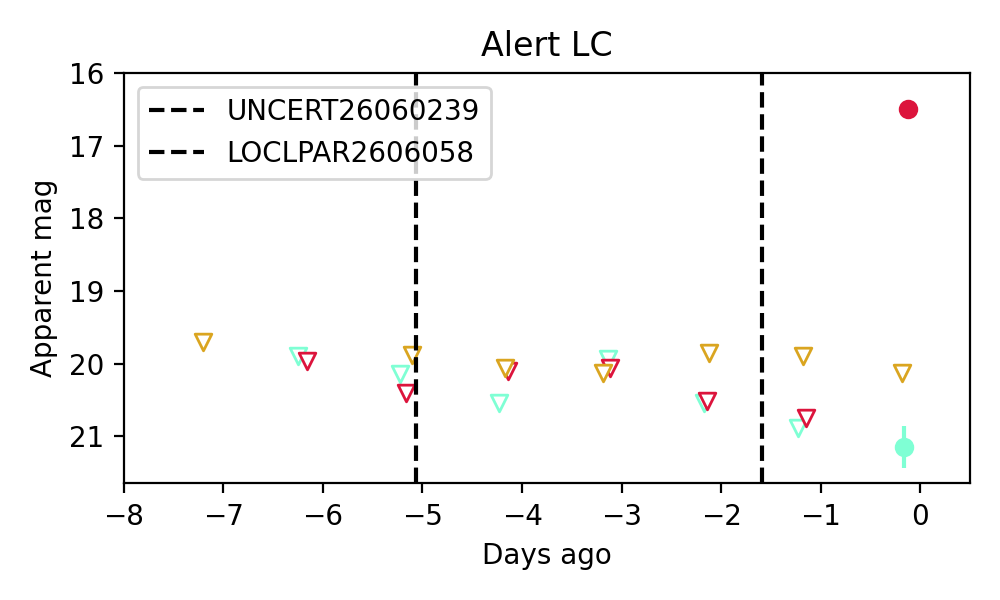
Consistent with synchrotron, g-r>0!
4. ZTF26abageel (Afterglow?) [Back to Top] [Share] [Trigger Swift] [Fritz ] [Lasair ]RA, Dec: 218.11453, -9.38033 14h32m27.49s, -9d-22m-49.20sGalactic (l, b): 340.26321, 46.0411 ext(g-r) = 0.074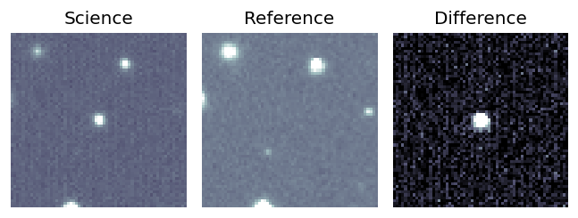
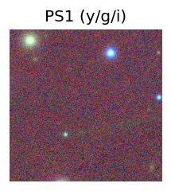
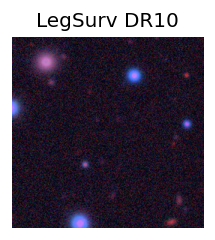
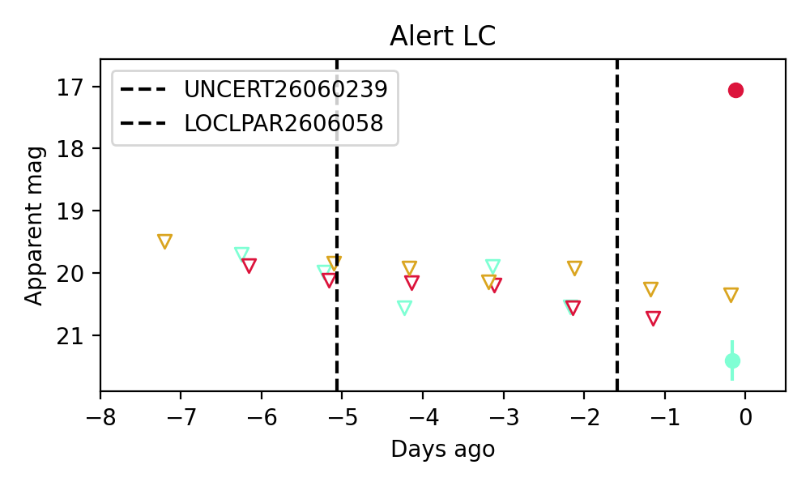
Consistent with synchrotron, g-r>0!
5. ZTF26abagpyr (Afterglow?) [Back to Top] [Share] [Trigger Swift] [Fritz ] [Lasair ]RA, Dec: 257.27415, -6.33648 17h 9m5.80s, -6d-20m-11.34sGalactic (l, b): 14.77756, 19.37028 ext(g-r) = 0.614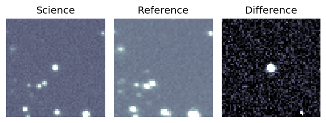
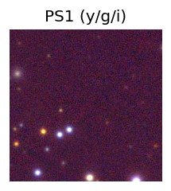
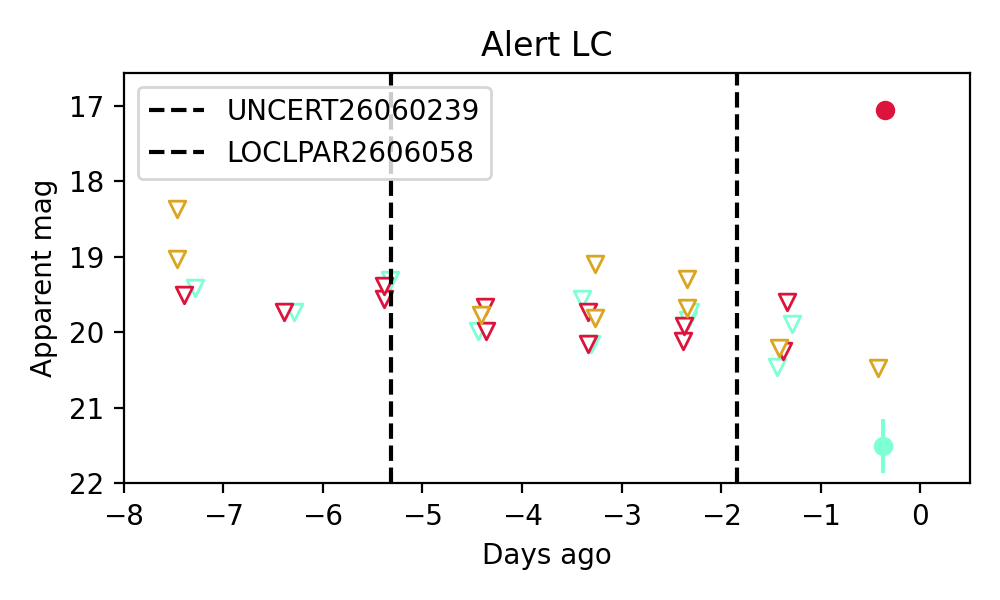
Consistent with synchrotron, g-r>0!
6. ZTF26abahuqg (Afterglow?) [Back to Top] [Share] [Trigger Swift] [Fritz ] [Lasair ]RA, Dec: 301.4883, 11.64011 20h 5m57.19s, 11d38m24.40sGalactic (l, b): 52.07817, -10.74549 ext(g-r) = 0.138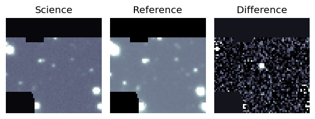
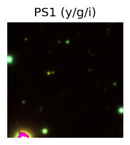
PS1: 1 source in 3 arcsec Closest: d = 4.28 arcsec photoz=0.35+/-0.20 peak abs mag = -23.24 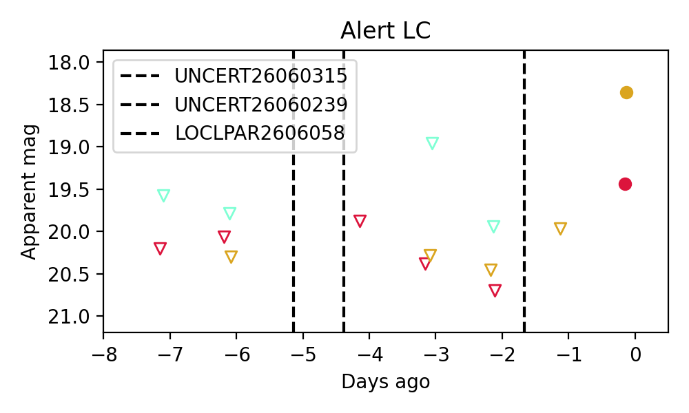
Consistent with synchrotron, g-r>0!
7. ZTF26abailuf (FBOT?) [Back to Top] [Share] [Trigger Swift] [Fritz ] [Lasair ]RA, Dec: 276.83071, -17.70187 18h27m19.37s, -17d-42m-6.73sGalactic (l, b): 14.47289, -2.84307 ext(g-r) = 1.077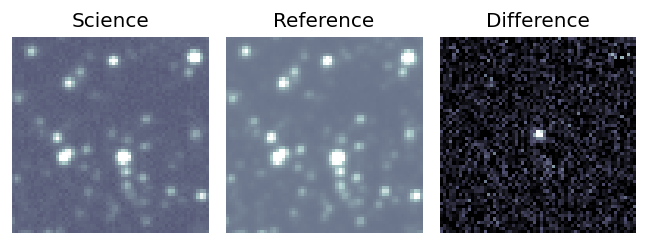
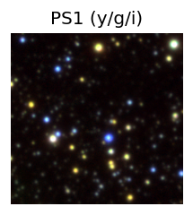
PS1: 1 source in 3 arcsec Closest: d = 0.35 arcsec photoz=0.05+/-0.00 peak abs mag = -20.15 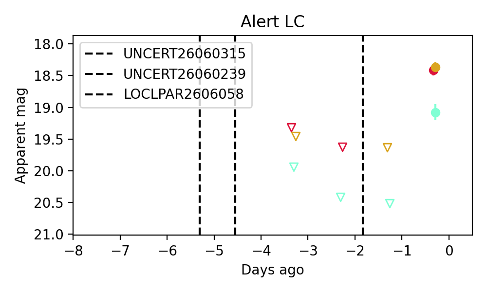
Section 2: Older Sources Observed Last Night (27)
0. ZTF26aayysdx (Afterglow?) [Back to Top] [Share] [Trigger Swift] [Fritz ] [Lasair ]RA, Dec: 263.3541, 37.01048 17h33m24.98s, 37d 0m37.72sGalactic (l, b): 61.75312, 30.78224 ext(g-r) = 0.041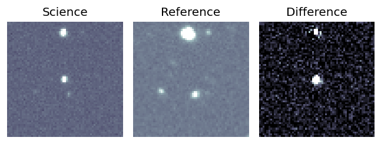
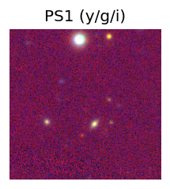
LegacySurvey: 1 sources in 3 arcsec Closest: d = 3.06 arcsec, 172.8 deg (east of north) photoz=0.9 (68% bounds 0.82, 1.0), type=REX peak abs mag = -27.43 (68% bounds -27.18, -27.73)
1. ZTF26aayytig (Afterglow?) [Back to Top] [Share] [Trigger Swift] [Fritz ] [Lasair ]RA, Dec: 285.37956, -10.62731 19h 1m31.09s, -10d-37m-38.33sGalactic (l, b): 24.56436, -7.03951 ext(g-r) = 0.48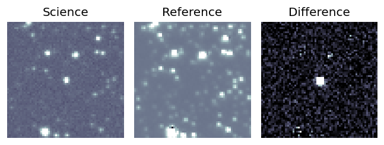
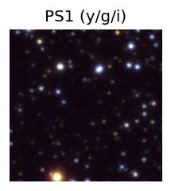
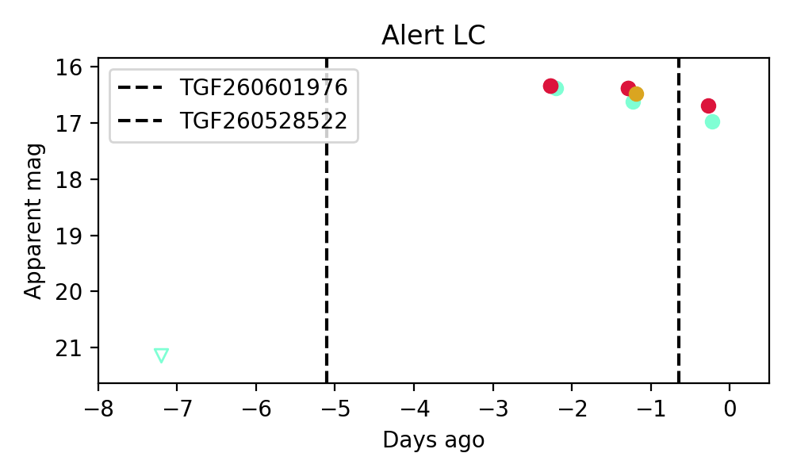
2. ZTF26aazbaxk (FBOT?) [Back to Top] [Share] [Trigger Swift] [Fritz ] [Lasair ]RA, Dec: 141.97493, 22.35018 9h27m53.98s, 22d21m0.63sGalactic (l, b): 207.17304, 43.84386 ext(g-r) = 0.027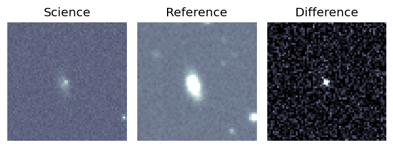
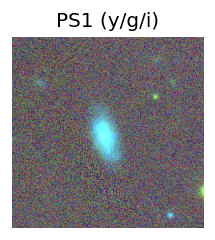
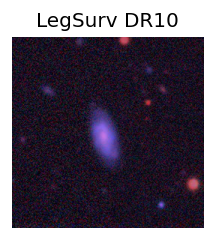
peak abs mag = -19.41 PS1: 1 source in 3 arcsec Closest: d = 1.97 arcsec photoz=0.09+/-0.01 peak abs mag = -19.80 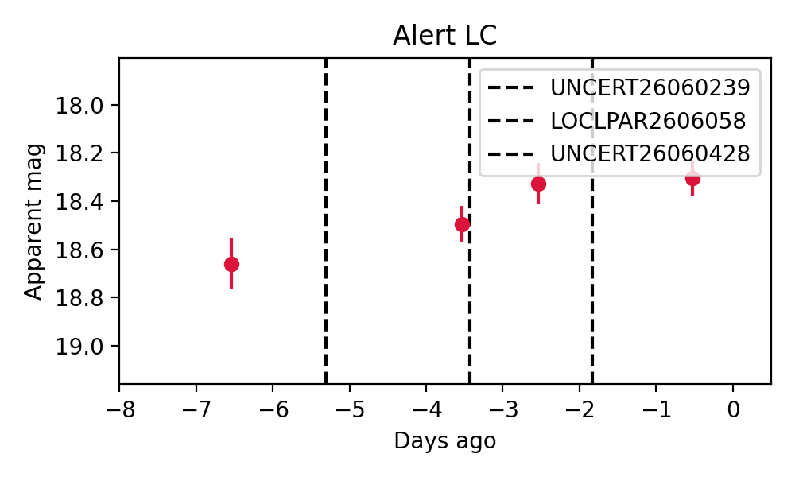
3. ZTF26aazbfav (Afterglow?) [Back to Top] [Share] [Trigger Swift] [Fritz ] [Lasair ]RA, Dec: 213.21187, -7.70145 14h12m50.85s, -7d-42m-5.21sGalactic (l, b): 335.33964, 49.97765 ext(g-r) = 0.043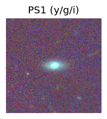
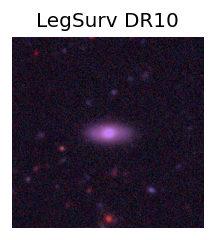
PS1: 1 source in 3 arcsec Closest: d = 0.47 arcsec photoz=0.06+/-0.00 peak abs mag = -19.13 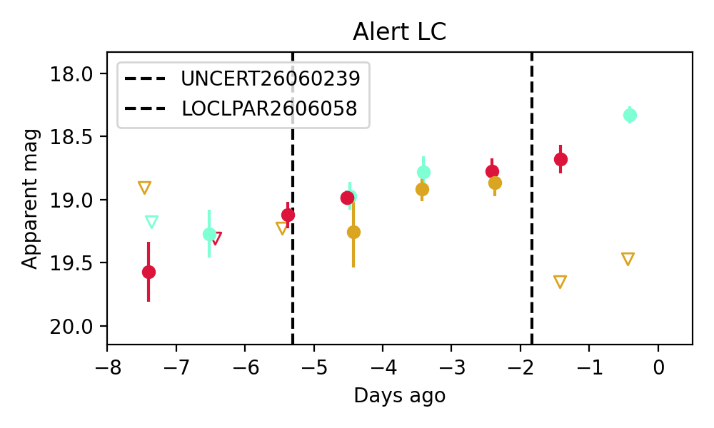
Consistent with synchrotron, g-r>0!
4. ZTF26aazknmk (FBOT?) [Back to Top] [Share] [Trigger Swift] [Fritz ] [Lasair ]RA, Dec: 229.41527, -24.91875 15h17m39.66s, -24d-55m-7.51sGalactic (l, b): 340.30586, 27.14429 ext(g-r) = 0.171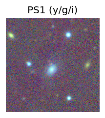
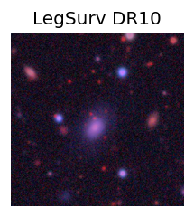
PS1: 1 source in 3 arcsec Closest: d = 3.38 arcsec photoz=0.07+/-0.01 peak abs mag = -20.44
5. ZTF26aazlxah (Afterglow?) [Back to Top] [Share] [Trigger Swift] [Fritz ] [Lasair ]RA, Dec: 255.16079, -0.95804 17h 0m38.59s, 0d-57m-28.93sGalactic (l, b): 18.56224, 23.95405 ext(g-r) = 0.356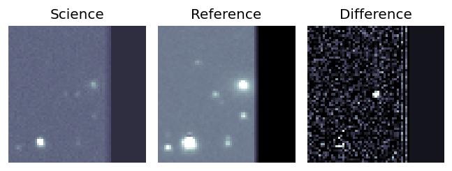
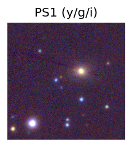
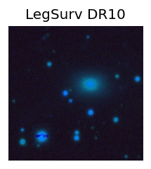
peak abs mag = -19.01 PS1: 1 source in 3 arcsec Closest: d = 3.18 arcsec photoz=0.08+/-0.01 peak abs mag = -19.24 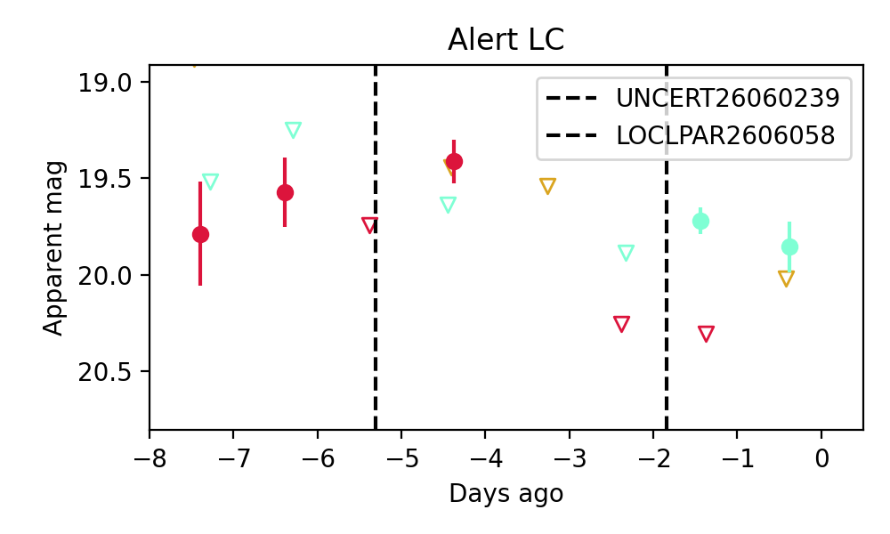
6. ZTF26aazmdgz (Afterglow?) [Back to Top] [Share] [Trigger Swift] [Fritz ] [Lasair ]RA, Dec: 240.20678, -14.46952 16h 0m49.63s, -14d-28m-10.27sGalactic (l, b): 356.71525, 28.0312 ext(g-r) = 0.226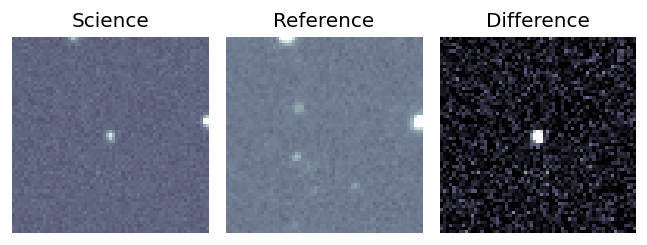
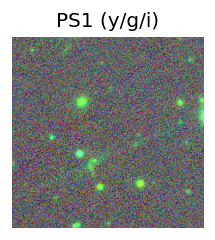
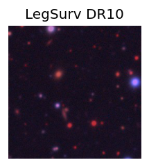
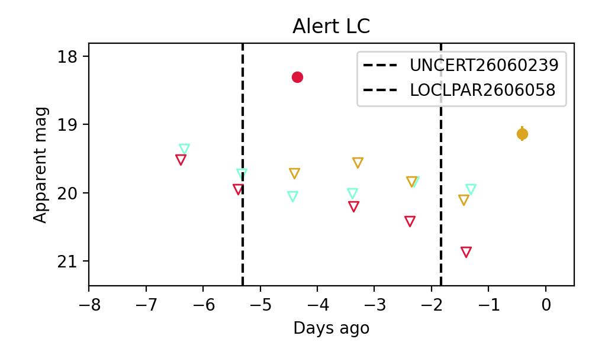
7. ZTF26aazpizm (FBOT?) [Back to Top] [Share] [Trigger Swift] [Fritz ] [Lasair ]RA, Dec: 226.83368, -0.3662 15h 7m20.08s, 0d-21m-58.33sGalactic (l, b): 358.44831, 47.31804 ext(g-r) = 0.063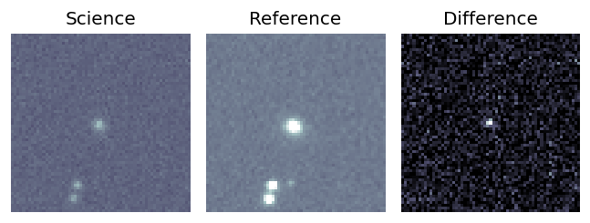
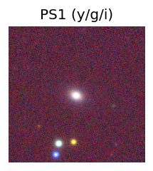
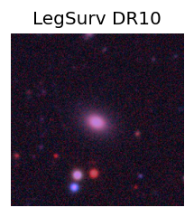
peak abs mag = -19.19 PS1: 1 source in 3 arcsec Closest: d = 1.20 arcsec photoz=0.10+/-0.01 peak abs mag = -19.51 Consistent with synchrotron, g-r>0!
8. ZTF26aazpkda (Afterglow?) [Back to Top] [Share] [Trigger Swift] [Fritz ] [Lasair ]RA, Dec: 235.51013, 8.30986 15h42m2.43s, 8d18m35.50sGalactic (l, b): 16.0679, 45.52973 ext(g-r) = 0.047peak abs mag = -17.79 PS1: 1 source in 3 arcsec Closest: d = 2.80 arcsec photoz=0.06+/-0.00 peak abs mag = -18.48
9. ZTF26aaztwcq (Afterglow?) [Back to Top] [Share] [Trigger Swift] [Fritz ] [Lasair ]RA, Dec: 239.32552, 11.28156 15h57m18.13s, 11d16m53.63sGalactic (l, b): 22.26617, 43.65936 ext(g-r) = 0.057peak abs mag = -18.07 PS1: 1 source in 3 arcsec Closest: d = 0.22 arcsec photoz=0.08+/-0.01 peak abs mag = -18.61 Consistent with synchrotron, g-r>0!
10. ZTF26aazuwhc (FBOT?) [Back to Top] [Share] [Trigger Swift] [Fritz ] [Lasair ]RA, Dec: 251.98677, -25.02912 16h47m56.83s, -25d-1m-44.85sGalactic (l, b): 355.81474, 12.76066 WARNING: -2.6 deg from ecliptic plane ext(g-r) = 0.397PS1: 1 source in 3 arcsec Closest: d = 2.91 arcsec photoz=0.07+/-0.01 peak abs mag = -19.91 Consistent with synchrotron, g-r>0!
11. ZTF26aazvfyy (Afterglow?) [Back to Top] [Share] [Trigger Swift] [Fritz ] [Lasair ]RA, Dec: 244.81631, -18.26908 16h19m15.92s, -18d-16m-8.69sGalactic (l, b): 356.80742, 22.20196 WARNING: 3.11 deg from ecliptic plane ext(g-r) = 0.385
12. ZTF26abaarva (Afterglow?) [Back to Top] [Share] [Trigger Swift] [Fritz ] [Lasair ]RA, Dec: 278.37002, 7.51653 18h33m28.80s, 7d30m59.51sGalactic (l, b): 37.61909, 7.39529 ext(g-r) = 0.426 Consistent with synchrotron, g-r>0!
13. ZTF26abaeuys (Afterglow?) [Back to Top] [Share] [Trigger Swift] [Fritz ] [Lasair ]RA, Dec: 235.25761, 4.90693 15h41m1.83s, 4d54m24.94sGalactic (l, b): 11.82127, 43.93412 ext(g-r) = 0.053
14. ZTF26abafegl (Afterglow?) [Back to Top] [Share] [Trigger Swift] [Fritz ] [Lasair ]RA, Dec: 236.72428, -12.89409 15h46m53.83s, -12d-53m-38.73sGalactic (l, b): 355.39211, 31.58267 ext(g-r) = 0.164PS1: 1 source in 3 arcsec Closest: d = 8.64 arcsec photoz=1.22+/-0.60 peak abs mag = -27.49
15. ZTF26abafhff (FBOT?) [Back to Top] [Share] [Trigger Swift] [Fritz ] [Lasair ]RA, Dec: 238.86685, -13.23585 15h55m28.04s, -13d-14m-9.07sGalactic (l, b): 356.75783, 29.82367 ext(g-r) = 0.159PS1: 1 source in 3 arcsec Closest: d = 3.30 arcsec photoz=0.09+/-0.07 peak abs mag = -20.92
16. ZTF26abafhhk (FBOT?) [Back to Top] [Share] [Trigger Swift] [Fritz ] [Lasair ]RA, Dec: 249.46925, 14.16578 16h37m52.62s, 14d 9m56.80sGalactic (l, b): 31.12711, 35.90853 ext(g-r) = 0.066PS1: 1 source in 3 arcsec Closest: d = 0.45 arcsec photoz=0.67+/-0.09 peak abs mag = -24.13
17. ZTF26abafktt (Afterglow?) [Back to Top] [Share] [Trigger Swift] [Fritz ] [Lasair ]RA, Dec: 246.92093, -10.25983 16h27m41.02s, -10d-15m-35.39sGalactic (l, b): 5.03013, 25.64416 ext(g-r) = 0.349PS1: 1 source in 3 arcsec Closest: d = 6.10 arcsec photoz=0.59+/-0.30 peak abs mag = -24.45
18. ZTF26abafkvc (Afterglow?) [Back to Top] [Share] [Trigger Swift] [Fritz ] [Lasair ]RA, Dec: 219.84979, 5.37031 14h39m23.95s, 5d22m13.13sGalactic (l, b): 357.52112, 56.33047 ext(g-r) = 0.041
19. ZTF26abafzyb (Afterglow?) [Back to Top] [Share] [Trigger Swift] [Fritz ] [Lasair ]RA, Dec: 246.3217, -0.5742 16h25m17.21s, 0d-34m-27.12sGalactic (l, b): 13.69411, 31.68579 ext(g-r) = 0.092
20. ZTF26abagixe (Afterglow?) [Back to Top] [Share] [Trigger Swift] [Fritz ] [Lasair ]RA, Dec: 230.7898, -19.79841 15h23m9.55s, -19d-47m-54.28sGalactic (l, b): 345.04266, 30.40072 WARNING: -1.19 deg from ecliptic plane ext(g-r) = 0.166
21. ZTF26abagktl (Afterglow?) [Back to Top] [Share] [Trigger Swift] [Fritz ] [Lasair ]RA, Dec: 222.49763, 52.60765 14h49m59.43s, 52d36m27.53sGalactic (l, b): 90.15593, 56.30774 ext(g-r) = 0.017peak abs mag = -17.75 LegacySurvey: 1 sources in 3 arcsec Closest: d = 1.50 arcsec, 154.5 deg (east of north) photoz=0.03 (68% bounds 0.02, 0.04), type=EXP peak abs mag = -15.29 (68% bounds -14.19, -16.21) Consistent with synchrotron, g-r>0!
22. ZTF26abagugy (Afterglow?) [Back to Top] [Share] [Trigger Swift] [Fritz ] [Lasair ]RA, Dec: 232.26369, -13.55282 15h29m3.29s, -13d-33m-10.16sGalactic (l, b): 351.16693, 34.17186 ext(g-r) = 0.128
23. ZTF26abaguud (FBOT?) [Back to Top] [Share] [Trigger Swift] [Fritz ] [Lasair ]RA, Dec: 232.3327, -17.17273 15h29m19.85s, -17d-10m-21.82sGalactic (l, b): 348.3267, 31.44926 WARNING: 1.72 deg from ecliptic plane ext(g-r) = 0.119PS1: 1 source in 3 arcsec Closest: d = 5.99 arcsec photoz=0.12+/-0.02 peak abs mag = -20.60
24. ZTF26abagwvq (Afterglow?) [Back to Top] [Share] [Trigger Swift] [Fritz ] [Lasair ]RA, Dec: 244.27418, -12.35979 16h17m5.80s, -12d-21m-35.25sGalactic (l, b): 1.41088, 26.39767 ext(g-r) = 0.382PS1: 1 source in 3 arcsec Closest: d = 8.84 arcsec photoz=0.48+/-0.31 peak abs mag = -24.07
25. ZTF26abahwwy (Afterglow?FBOT?) [Back to Top] [Share] [Trigger Swift] [Fritz ] [Lasair ]RA, Dec: 283.7424, 51.31423 18h54m58.18s, 51d18m51.22sGalactic (l, b): 81.13631, 20.32607 ext(g-r) = 0.041LegacySurvey: 1 sources in 3 arcsec Closest: d = 1.21 arcsec, 141.3 deg (east of north) photoz=0.4 (68% bounds 0.22, 0.46), type=PSF peak abs mag = -22.23 (68% bounds -20.74, -22.58)
26. ZTF26abainyg (Afterglow?) [Back to Top] [Share] [Trigger Swift] [Fritz ] [Lasair ]RA, Dec: 259.33836, -19.20176 17h17m21.21s, -19d-12m-6.35sGalactic (l, b): 4.71784, 10.68746 WARNING: 3.86 deg from ecliptic plane ext(g-r) = 0.405PS1: 1 source in 3 arcsec Closest: d = 6.11 arcsec photoz=0.48+/-0.32 peak abs mag = -24.88